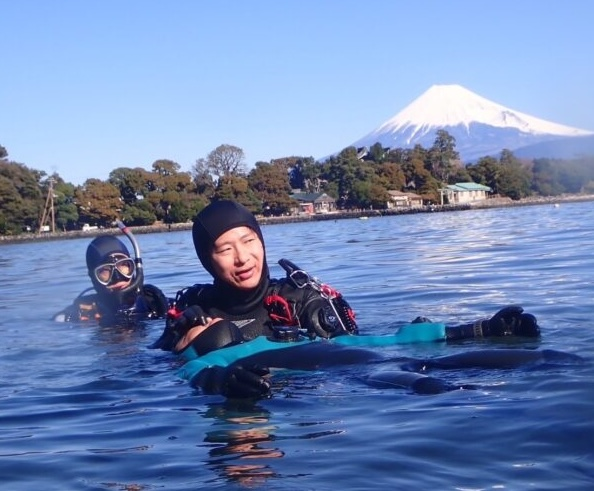

Estás planeando tu viaje a Japón. Tienes decenas de lugares para comer, y varios templos para visitar, así como los barrios más populares de Tokio. Pero sientes que necesitas algo más. Quieres algo que te conecte con la naturaleza, que te permita desconectar del estrés de la ciudad, y que te deje un recuerdo imborrable de tu viaje. Quieres bucear en Japón, pero no sabes dónde.
Tu primera idea es Okinawa, el destino más famoso y turístico del país, pero la logística de aviones, traslados, y el tiempo de espera para volver a volar, se come todo tu calendario, así que desechas la idea.
Pero un momento, ¿y si te dijera que hay un lugar a solo 2 horas de Tokio donde puedes bucear en aguas templadas, con paisajes volcánicos, y con la seguridad de un guía en español? Ese lugar existe, y se llama Izu. En este artículo te voy a contar las 5 razones por las que Izu es el destino perfecto para bucear cerca de Tokio, y por qué deberías elegirlo para tu aventura en Japón.

1. El factor tiempo: De la inmersión a cenar en Tokio
Japón es famoso por su transporte. Casi cualquier pueblo, por remoto que sea, está conectado mediante tren; y en este caso, el pueblo de Atami cuenta con la joya de la corona: la parada de Shinkansen.
Desde la estación de Tokio, te plantas en 40 minutos en la estación de Atami, donde puedo pasar a recogerte con toda la comodidad. Ya estamos preparados para la aventura. Una vez finalizado el buceo, desde que sales del agua, puedes estar de vuelta en Tokio en un par de horas. Lista para disfrutar de la cena en algún Izakaya perdido de Shibuya.
2. Paisajes volcánicos y vistas al Monte Fuji
Okinawa es coral, pero Izu no se queda atrás. Atami dispone de grandes cantidades de coral blando, que cubre las paredes volcánicas con un bosque lleno de colores. En Izu Oceanic Park, puedes bucear en el primer centro de buceo de Japón. La belleza de sus fondos, con paredes volcánicas y la posibilidad de ver grandes pelágicos como atunes o tiburones cornudos, lo convierten en un lugar único. Además, en puntos como Osezaki, puedes disfrutar de la majestuosidad del Monte Fuji al fondo justo al salir del agua.

3. Una mezcla única: Aguas templadas y cálidas
Aquí se cruzan corrientes de agua templada y cálida, creando un ecosistema raro donde coinciden especies que normalmente no verías juntas. Tienes la oportunidad de ver vida marina de ambos climas en un mismo punto, algo que rompe con el típico buceo tropical de postal y lo hace mucho más interesante. Esta mezcla de aguas hace que la cantidad de vida se multiplique, creando un ecosistema realmente rico.
5. Bucea donde bucean los locales, no los turistas
Okinawa es el destino típico para las masas. Izu, en cambio, es el refugio de los buceadores que viven en Japón. Aquí te ahorras las hordas de turistas y las "trampas" para extranjeros. Vivirás el ambiente real de un centro de buceo japonés, pero con atención personalizada y sin agobios.

4. Seguridad total: Briefing en español
Bucear en Japón es una experiencia increíble, pero la barrera del idioma puede ser un problema. A ti no te va a pasar esto: desde el primer momento, la actividad es completamente en español. Al bucear conmigo, tienes la tranquilidad de un instructor SSI en español. Briefings claros, comunicación directa y nada de malentendidos bajo el agua. Tú vienes a disfrutar, no a usar el traductor.
¿Te animas a vivir esta aventura conmigo?